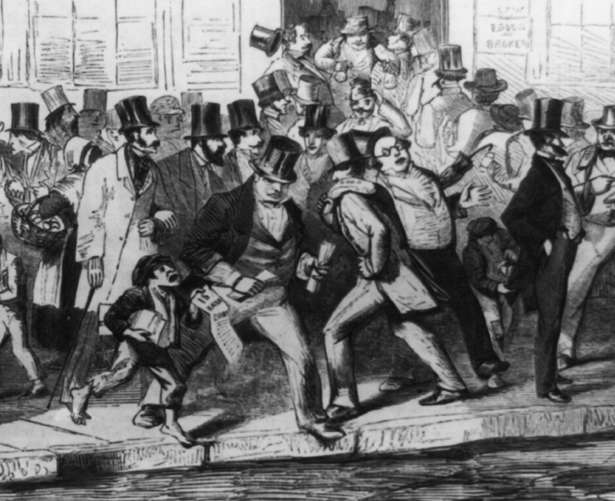
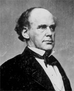
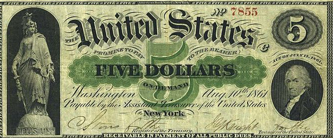
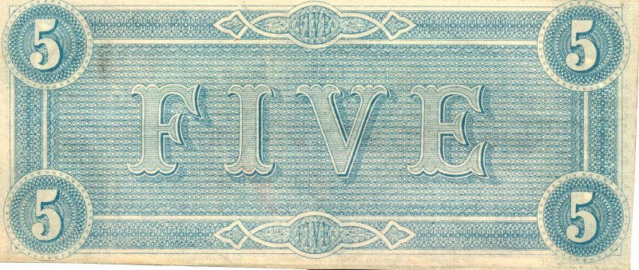

|
In 1850, the economy of the United States was booming.
Indeed, it was the strongest it had ever been, and was
beginning to rival even the great powers of Europe--particularly
Great Britain.
The Economy before the Civil War
The South was exporting more than $150 million worth of
agricultural products a year. The North's factories were
growing as the region industrialized. The nation's railroad
mileage tripled between 1850 and 1855, to 30,000 miles.
Meanwhile, thousands of new schools and churches were
founded.
For the North, the bubble burst in the summer of 1857. In
August, the Ohio Life Insurance Company of Cincinnati closed
|

A bank run during the Panic of 1857.
|
its doors. The unexpected collapse of one of the nation's
most prominent businesses started a run on banks across the
country, and sent the nation into a depression that would
last into the Civil War. The Panic of 1857 had a number of
root causes. First, state banks, operating with only minimal
oversight, had failed to keep their capital reserves at a
high enough level. Second, railroads had expanded too much,
and were unable to meet their costs. Third, the end of the
Crimean War in Europe led to a resurgence of agriculture on
that continent, with a resulting drop in the prices being
paid for the crops of Midwestern farmers. Finally, gold
prices had dropped due to an influx of gold from California.
The South was largely unaffected by the Panic of 1857.
European demand for cotton remained high. At the same time,
the South took advantage of new forms of transportation and
new kinds of cotton seeds. As a result, cotton production
doubled during the 1850s. In 1860 alone, the South grew two
billion pounds of cotton with a value of $250,000,000. The
incredible profitability of "King Cotton" encouraged
Southerners to invest nearly all of their money in more land
and more slaves. As a result, the region failed to develop
industrially, and failed to build up meaningful cash
reserves.
The Union Pays for the War
When the Civil War broke out, then, neither the northern
nor the southern economy was ready for the economic demands
of a war. The North was still suffering the effects of the
Panic of 1857, and was also handicapped by an antiquated
banking system. The South had very little capital or credit,
and very little industrial capacity. Ultimately, the Union
was able to overcome the economic obstacles it faced, and
|

Salmon P. Chase did not get along
well with President Lincoln, but he nonetheless served
with distinction as Treasury Secretary during the Civil War.
|
this success played an important part in the northern
victory. The Confederacy, on the other hand, made very
little progress in addressing its economic challenges, and
this failure played a major role in the South's defeat.
During the Civil War, the main economic issue that both
the Union and Confederate governments faced, naturally, was
paying for the war. There were three main options available
for raising funds to pay the government's bills: taxation,
bond issues, and printing currency. Northern authorities
used all of these tools in an effective fashion. Early in
the war, the northern Congress authorized several bond
issues. A bond is an agreement between the government and
private businesses or citizens -- money is loaned to the
government with the promise that it will be repaid with
interest at some agreed upon point in the future. Before the
Civil War, bonds had been sold only to bankers, but Treasury
Secretary Salmon Chase decided to open up bond purchases to
the general public. This was a stroke of genius for two
reasons. First, it gave the government access to a vastly
larger pool of money. Second, it gave the citizenry a vested
interest in the success of the northern war effort and the
northern economy. The public responded slowly at first, but
eventually talented bond salesmen, most notably Jay Cooke,
succeeded in winning the people over. One family in four
purchased at least one bond during the war, adding $1.5
billion to the Union government's coffers.
The Congress also moved to increase taxation fairly early
in the war. In March of 1861, before the war had even begun,
Congress passed the Morrill Tariff Act. The Morrill Act more
than doubled the rates on goods coming into the country,
raising them from 20% to 47%. In August of 1861, Congress
levied a tax of 3% on incomes over $800, the first income
tax in American history. A succession of bills eventually
expanded the tax to 5% on incomes over $600 up to 10% on
incomes over $10,000. Income taxes and the high tariff
helped keep inflation down in the North, while adding $600
million to the Union government's balance sheet.
The most controversial step the northern Congress took in
order to finance the war was the passage of the Legal Tender
Act of 1862. Prior to the Civil War, currency was almost
invariably backed by a quantity of silver or gold, known as
specie, being held in a bank vault. At any time, paper money
|

The first U.S. "greenback," from 1862.
|
could be exchanged at the institution that had issued it for
specie of equal value. By 1862, however, there was not
enough specie in the North to keep this system viable. As
such, the Legal Tender Act provided for the printing of $150
million worth of what is known as fiat currency. Fiat
currency is backed not by specie but instead by the good
credit of the government. The Act also specified that this
fiat currency would be legal tender, which meant that people
and businesses were legally required to accept it as payment
for debts.
There were a number of objections to the printing of fiat
currency. Some congressmen argued that Congress was not
empowered to print money that was not backed by gold or
silver. Others felt that it was immoral to force Americans
to accept this money. Still others argued that fiat currency
would create runaway inflation. These fears proved to be
unfounded. Most northern citizens proved willing to accept
"greenbacks" as a medium of exchange. Inflation was kept
within reasonable limits. In total, the printing of
greenbacks provided $447 million for the Union war effort.
As it worked to finance the war, the Union government
also took steps to shore up the foundations of its financial
system. The National Banking Act of 1863 created a system of
banks chartered by the federal government. These banks were
allowed to print currency, as long as the currency was
backed by government bonds. This created a market for
government bonds, and strengthened the Union's greenback
currency by tying it to those bonds. It also gave the Union
government more control over banks and the nation's money
supply. The Congress went even further in this direction in
1864, when it passed a law establishing a 10% tax on money
printed by state-chartered banks. This effectively took
these banks out of the business of printing money. By the
end of 1865, a total of 1,294 national banks had been
chartered. They had more than five times the assets of the
349 state banks still in existence. This banking system
would remain in place throughout the Civil War and
Reconstruction.
Northern leaders, then, struck a balance between
taxation, bond issues, and the printing of currency, while
at the same time taking steps to rectify problems within
their financial system. Confederate authorities had the same
options available to them, but under the leadership of
Treasury Secretary Christopher Memminger, they proved far
less able to maintain an effective balance. The results were
devastating for the Confederate economy.
The Confederacy Pays for the War
Early in the war, the Confederate Congress considered the
possibility of taxing its citizens. There was widespread
opposition to the idea, however. Some congressmen opposed
taxation because of their dislike of a strong central
government. Others felt that such a step would undermine
support for the war. Still others saw a tax as unnecessary,
believing the war would end quickly. In August of 1861,
proponents of taxation finally persuaded the Congress to
exact a nominal property tax, but it ended up adding very
little money to the Confederate bottom line. In 1863, the
poor state of the Confederate economy allowed for a more
comprehensive tax to be passed, but it also did little to
help the Confederate cause. The bill taxed incomes at rates
from 1% to 15%, and established a "tax-in-kind" for farmers
that required them to turn over 10% of their crops to the
government. Due to evasion and poor enforcement, these taxes
provided less than $150 million for the war effort, most of
it in depreciated currency late in the war.
Among Confederate officials, the preferred means for
financing the war was bond issues. An initial offering of
$15 million in 1861 was quickly purchased by patriotic
southerners. After that, however, bonds became increasingly
difficult to sell, as the available money in the South dried
up. The Confederate Congress then authorized a "produce
loan" of $100 million wherein farmers would be allowed to
pledge a portion of their crops in exchange for bonds.
Although an innovative idea, the produce loan failed to
produce the desired results. Farmers were reluctant to take
|

A Confederate "blueback" from 1861.
|
advantage of the program, preferring instead to hoard their
crops or sell them to the Union soldiers. And when pledges
were made, the Confederate government often had difficulty
collecting the crops that were due. By the end of the war,
the produce loan had generated only $34 million.
Given how little money was being raised through taxes and
bonds, the Confederate government had little choice but to
begin printing fiat currency. The Congress authorized the
printing of $119 million worth of "bluebacks" in 1861 and
$400 million worth in 1862. This money quickly lost value,
for a variety of reasons. The Confederate government was not
nearly as stable as the Union government, thus Confederate
fiat currency was far less trustworthy than Union fiat
currency. Beyond that, there was far too much currency in
circulation. By the end of 1862, the Confederate government
had printed almost as much money as the Union government
would print over the course of the entire war. The glut of
paper money was made even worse by the fact that state and
local governments were also compelled to print money to meet
their obligations. Yet another problem was that the
Confederate government chose not to make Confederate
currency legal tender - southern citizens and businesses
were not legally required to accept it as payment for goods
and services. The purpose of this decision was to inspire
confidence in Confederate paper money, but in the end it had
the opposite effect. Southerners avoided Confederate money
whenever possible, relying mostly on barter, on specie when
it was available, and sometimes on Union currency.
In addition to establishing a poor balance between
sources of money, the Confederate government also took steps
that undermined its financial system. At the start of the
war, the South had a system of branch banks that was much
more stable and much more modern than the decentralized
banking system of the North. Early in the war, the
Confederate Congress required southern banks to provide
loans to the government, exchanging specie and bank notes
for bonds. As the government's bonds declined in value, the
banks were effectively drained of capital. The government
continued to exacerbate the situation throughout the war,
through excessive taxation on banks, and additional forced
loans. Union armies also contributed to the banks' woes. A
large portion of the assets of southern banks was invested
in land and slaves, and as the Union army marched across the
South these assets were lost. By the end of the war, the
southern banking system had effectively collapsed.
The failure of the Confederate government's economic
policies was evident on both the war front and the home
front. Confederate soldiers were notoriously undersupplied.
They often went without proper uniforms, modern weapons,
sufficient ammunition, or adequate rations. In desperation,
they took whatever steps possible - stealing, utilizing
captured goods, even trading with the enemy.
On the home front, the situation was arguably even worse.
Inflation was out of control in the Confederacy - 9000% over
the course of the war. By 1865, flour cost as much as $500 a
barrel, and a suit of clothes cost $2,500. The Union's naval
blockade contributed to the Confederacy's economic problems
by curtailing the amount of goods flowing into the South,
while denying southerners the opportunity to sell their
cotton. Although the South had an agricultural economy, many
southerners starved over the course of the war. Railroads
were in a state of disrepair, and food rotted in storage
because it could not be transported to the locations where
it was needed. The privations felt by the southern people
created epidemics of disease, and even resulted in
occasional rioting. The largest riot occurred in Richmond on
April 2, 1863, when several hundred women marched through
the streets smashing store windows and chanting "Bread or
Blood!" Jefferson Davis himself had to speak to the mob and
convince them to disperse.
The failures of the southern economy stood in stark
contrast to the successes of the northern economy. By 1862,
the North had entirely recovered from the Panic of 1857, and
its economy was thriving. While the Confederate army
struggled to survive, the Union army was the best-supplied
military force in history. Inflation was kept in check as
much as was possible in a wartime economy--while the South's
rate of inflation exceeded 9000% over the course of the war,
inflation in the North was only 80%. A few northern
industries struggled due to the loss of southern raw
materials and customers, but others prospered. The
agricultural sector performed especially well. Northern
farmers were able to produce more wheat and corn in 1862 and
1863 than the entire nation had produced in 1859. Between
1861 and 1865, American agricultural exports doubled. This
is a remarkable accomplishment given that one-third of the
workforce was in the army.
The successes of the northern economy and failures of the
southern economy had a clear impact on the outcome of the
war. The Union government was able to put an extremely
well-equipped army into the field throughout the course of
the war, while still satisfying the needs of civilians on
the homefront. Meanwhile, the Confederacy was increasingly
unable to provide for the needs of its soldiers and its
civilians. This drained an already outnumbered southern army
of manpower, as some soldiers succumbed to disease or
starvation, and others deserted to take care of needy family
members. Meanwhile, suffering on the homefront deprived the
Confederacy of valuable labor and also undermined support
for the war.
The Economy after the Civil War
The long-term economic effects of the Civil War are
harder to nail down. Some historians argue that the Civil
|
A bank run during the Panic of 1873.
|
War started America on the path to industrialization; others
suggest that the Civil War simply hastened trends already in
progress. What is certain is that the Civil War caused a
major redistribution of wealth from the South to the North.
In 1860 the South's share of national wealth had been 30%,
by 1870 it was 12%. This disparity would endure for decades
after the Civil War, and would create an almost constant
state of economic deprivation in the South throughout the
Reconstruction period, and into the late-19th and early 20th
centuries.
While the Southern economy struggled in the years
immediately after the Civil War, however, the Northern
economy prospered. Industrialization continued, and the
national banking system established during the Civil War
kept currency stable. A number of measures adopted by the
Republican Congress during the war, particularly the Pacific
Railroad Act, pumped government money into the economy.
Meanwhile, Northern farmers continued to fetch high prices
for their crops, as Europe suffered through a series of poor
harvests.
In 1873, a financial panic once again undermined Northern
prosperity. The Panic of 1873 began with the closure of Jay
Cooke and Company, and resulted in a lengthy depression.
Overextension of the railroads once again played a part, as
did the collapse of several European economies, and the
damage done by the great Chicago fire of 1871. Ultimately,
the Panic of 1873 left three million people unemployed,
while causing the failure of businesses valued at $500
million. The economy would not recover until 1878, when
industrialization would once again begin to drive the
economy forward at a breathtaking pace.
Source: Joan Waugh, ed., Facts on File Encyclopedia of American
History: Civil War and Reconstruction, 1856 to 1869 (New York: Facts on
File, 2003), 104-107.
|